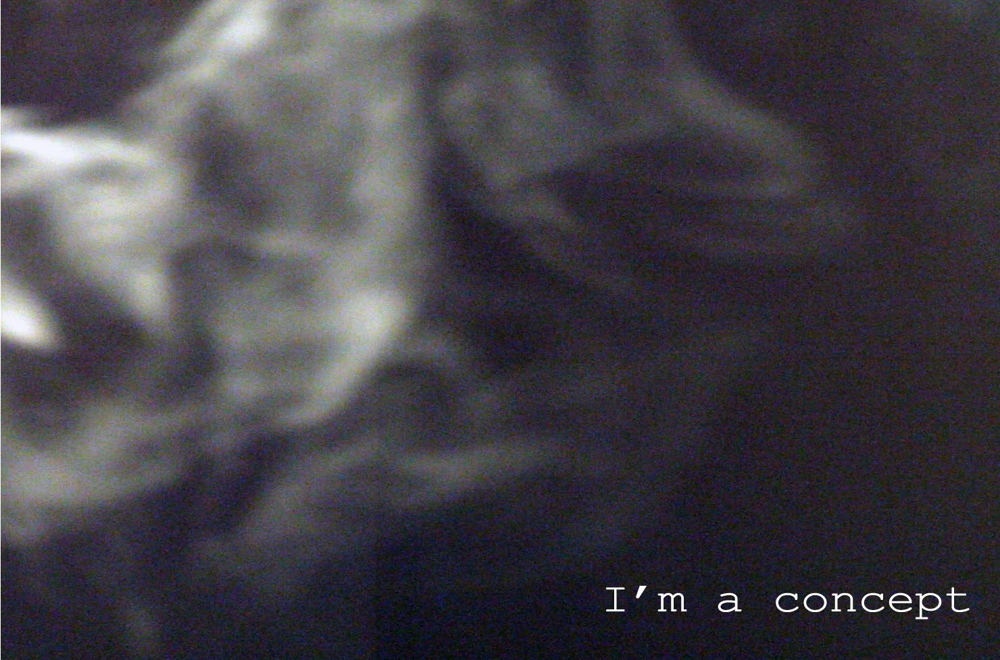

Photography · video · performance
Photo and video projects
A visual practice that runs alongside my research: rooms, objects, bodies, absence and evidence. Older art-portfolio work from 2007–2010 and later photo collections. Open a project to see the full series.

A photo sequence about performance, escape, and awkward freedom.
photography · 8 images

A quiet sequence of surfaces, cuts, gestures, and withheld movement.
photography · 7 images

Exhibition views, installation fragments, and documentation.
exhibition documentation · 28 images

Waiting, street fragments, bodies, and public-space choreography.
photography · 6 images

An interior, a colour, light, objects, and a room becoming a scene.
photography · 5 images

Rooms, objects, absence, and traces of someone not directly shown.
photography · 13 images

Private space, performance, rooms, projection, exhibition.
performance · video · photography · programming · interactivity

Small events, familiar surroundings, memory loops.
photography

Video project, 2010; “cu 30 de ani înainte.”
video

Striped dress, toy rabbit, a room in black and white.
photography

Photography and exhibition views, 2009.
photography

Photography and exhibition views, 2009.
photography

Video stills from the 2009 portfolio.
video

Video project, 2009.
video

A street sequence photographed from behind.
photography

Repeated close-ups of a piercing on a hand.
photography

Ink drawings, a dream room, captioned images.
drawing · photography

A book of images, text fragments, truthfulness and staring.
photography · book

Night streets, a lit doorway, dark rooms.
photography

Winter nights, Before and After.
photography